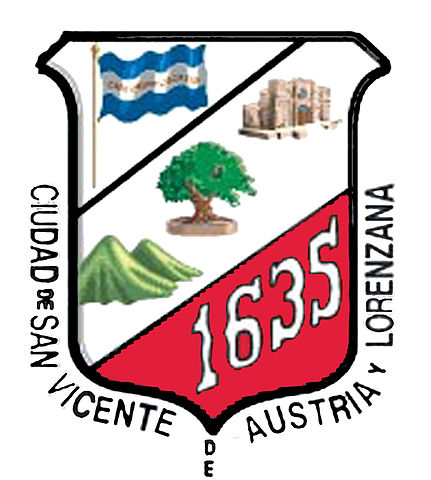

- Extensión territorial: 267,25 km²
- Idioma: Español
- Tradiciones: Artesanías de hilo en san Vicente
Los tabancos así mejor conocidos acostumbran a fabricar colchas, manteles, telas y coloridas hamacas.
El telar de palancas o pedales es otra modalidad para la producción de telas.se ejecutan movimientos coordinados de pies y manos.
- Alcalde: Medardo Hernández Lara
- Poblacion: 53,213 hab.
- Fiestas patronales: 12-31 de diciembre, fiestas patronales
- Productos artesanales: Amacas
- Sitios turísticos: 1.Laguna de Apastepeque
2.Turicentro Amapulapa
- Mapa
- Santa Ana
- Sonsonate
- Usulutan
- San Miguel
- Morazan
- La Union
- La Libertad
- Chalatenango
- Cuscatlan
- San Salvador
- La Paz
- Cabañas
- San Vicente